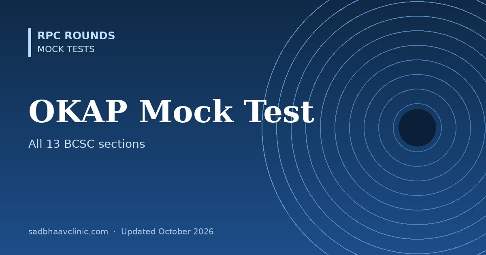

OKAP Mock Test: 50 Questions Across the 13 BCSC Sections
Last updated: October 2026
A 50-question mock in the style of the OKAP (Ophthalmic Knowledge Assessment Program) and OKAP International, with about four questions from each of the 13 sections of the AAO Basic and Clinical Science Course. Useful for residents anywhere who want to check their breadth against the US curriculum.
- Format: four options, single best answer, 50 minutes (the real OKAP has 260 questions in 4.5 hours).
- Sections: general medicine, fundamentals, optics, pathology and tumours, neuro-ophthalmology, paediatrics and strabismus, oculoplastics, cornea, uveitis, glaucoma, lens and cataract, retina and refractive surgery.
- Results by section, so you can see which BCSC books to revisit.
See OKAP, FRCOphth and ICO exams for the official format and which RPC Rounds articles cover each BCSC section.


Preparing for AIOS-OKAT?
OKAT Decoded is a three-volume question bank by Dr Dhaval Patel: 10,200 original MCQs, each with an explanation, a reason why every other option is wrong, and a pearl, plus 18 full-length mock tests.
More free mocks: all mock tests.
📘 Want more exam-ready material? See Most Commons in Ophthalmology on Kindle, or browse all my books.
Looking for an eye specialist in Ahmedabad? Learn about our Eye Department or book a consultation with Dr. Dhaval Patel.